Inner Rings
The first ring on this round grew in 1309, which wasn’t the first year of this tree’s life. This section was located 154 feet above the ground, which is why it’s impossible to see the tree’s earliest rings.
Summer to fall
Spring to summer
False Ring
Redwoods occasionally produce a “false ring” within a true ring boundary. For example, early arrival of unseasonal, winter-like conditions could leave an inconsistent dark line where a tree’s growth slowed, but then briefly resumed high wood production before the true winter began.


1729
1726
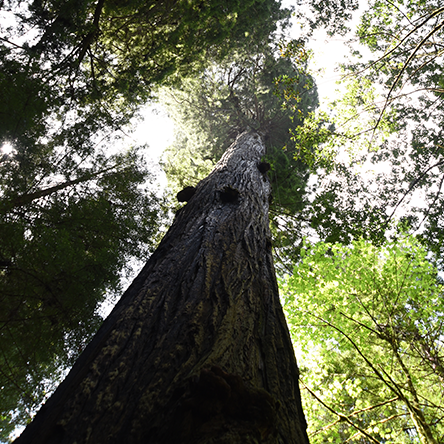
Years of Plenty
Growing seasons with more water, nutrients, and light generally produce thicker growth rings. But a tree’s center rings are thicker compared to its outer rings, regardless of growing conditions. Because of this size-related geometry, the significance of ring width is best judged by comparing other rings nearby.


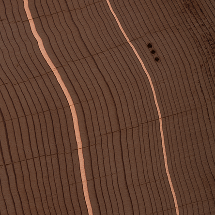
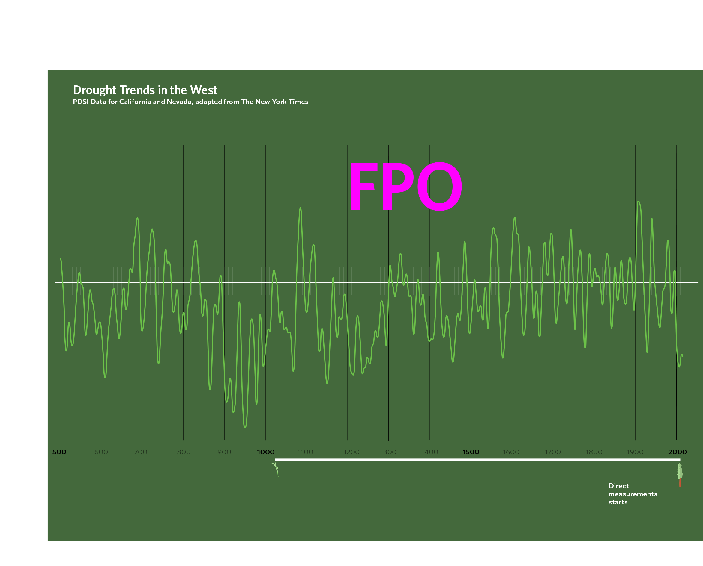
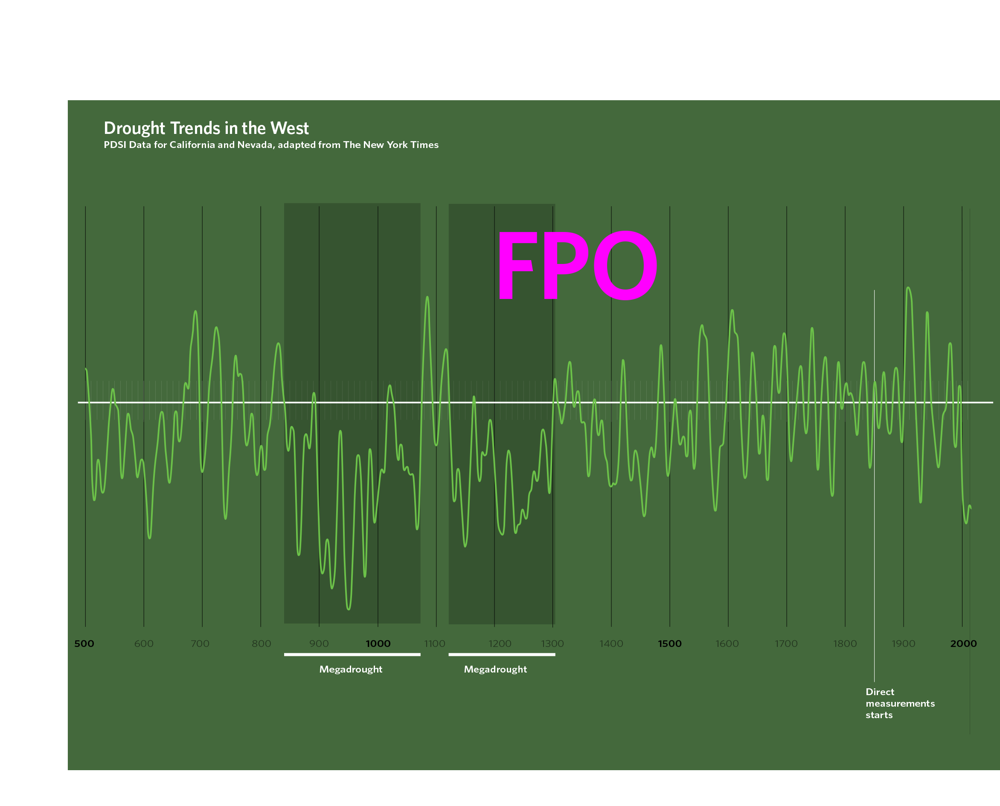
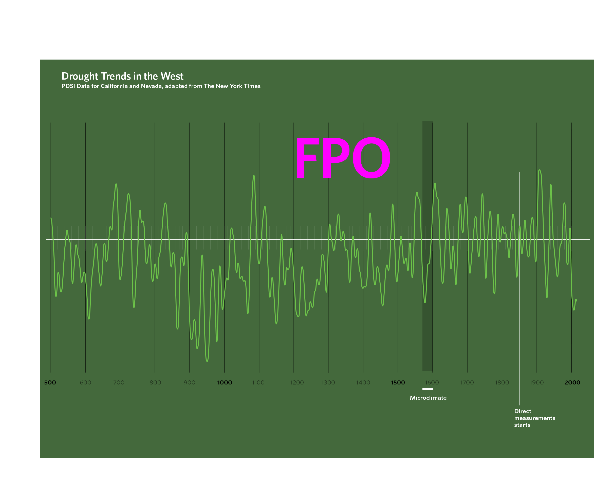
Comparing Climates
The unique microclimate shields coastal Northern California somewhat from severe droughts that affect our state. We can see this in the tree’s mid-life rings: In 1580, while trees 800 900 1000 1100 1200 1300 1400 1500 1600 1700 1800 1900 2000 elsewhere in California struggled with severe drought, this tree grew normally. But in 1598, drought in the region suppressed growth in this tree as well.
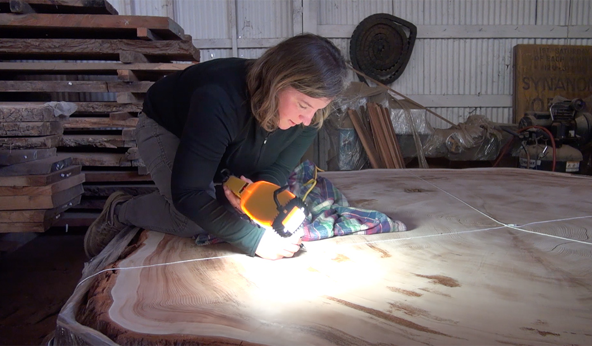
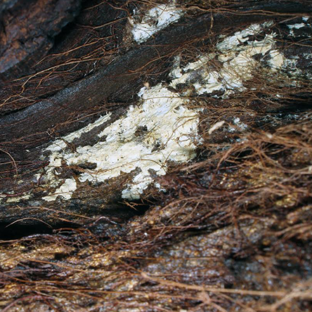
Fighting Fungus
Bright-red compounds called tannins—toxic to many insects and microbes—give redwoods their famous color and resistance to most pests. Only a few species, like the Poria sequoiae that caused this decay, can get past the redwood’s chemical defenses.

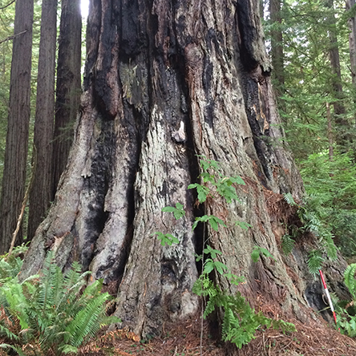
Natural Causes
The Yurok Tribe has used low-intensity fires to maintain healthy redwood forests for centuries, but their controlled burns likely did not cause this particular fire. It burned hot and high enough to cause damage 154 feet above the ground, suggesting it was an uncontrolled natural wildfire.

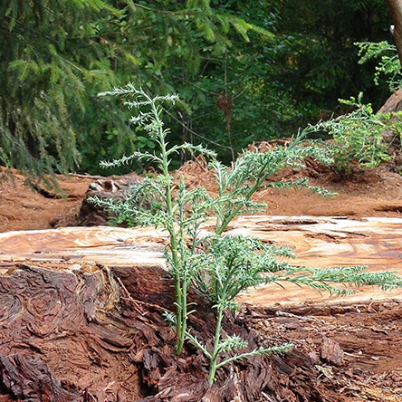
Benefits of Burl
This ability to regenerate helps redwoods survive for thousands of years. Over time, the process of damage and regrowth creates a highly complex and totally unique crown in each mature redwood tree.

1527
Low-growth year, likely due to drought.
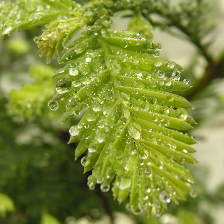
Invisible Insights
You can’t see the relative amounts of rainwater and fog water in a tree ring just by looking at it. However, fog water has a different chemical signature than rainwater. Measuring the chemical composition of the rings can provide insight into how redwoods use these two water sources under different climate conditions.


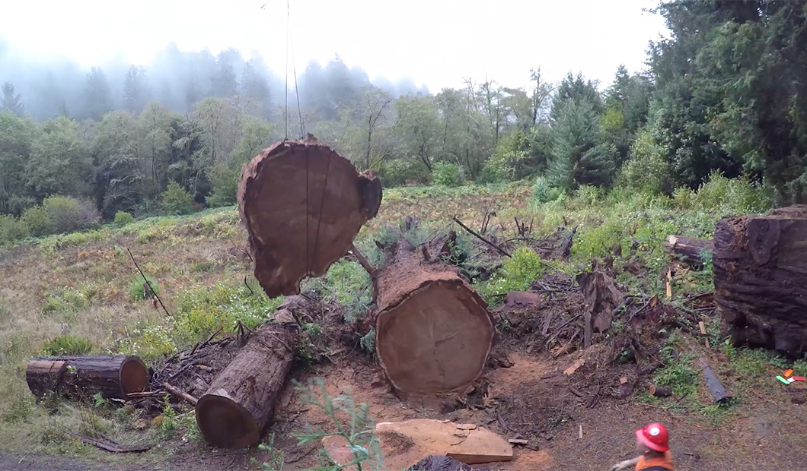
Local growth
Climate affects redwood growth, but local factors may play a larger role in an individual tree’s growth. A fallen neighbor tree may suddenly have provided this tree with more light, for example. We can see larger patterns of climatic impact on coast redwood growth when we compare the rings of many trees.